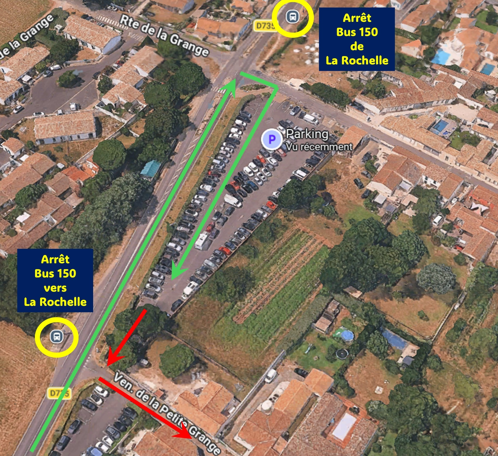
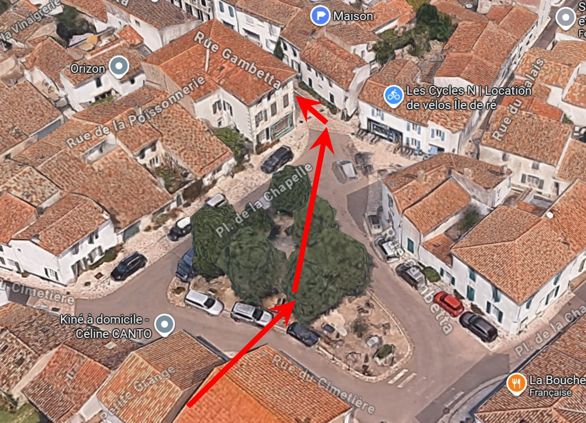

Bienvenue
Bienvenue à Ars-en-Ré !
Vous trouverez ci-dessous les informations les plus pratiques pour rejoindre facilement la maison.
En voiture
En arrivant par la D735, route de Saint-Clément, rejoignez le grand parking situé au croisement de la route de la Grange.
Où se garer ?
Nous vous recommandons de vous garer au fond du parking.
Cela permet d'accéder directement à la venelle de la Petite Grange, qui mène à la maison en quelques minutes à pied.

En bus
En arrivant de la gare de La Rochelle par la ligne 150, descendez à l'arrêt Déviation, situé au bout de la route de la Grange sur la D735.
Dans le sens du retour, l'arrêt se trouve sur la D735, au bout de la venelle de la Petite Grange.
🚌 Consultez les horaires et les informations de la ligne 150 sur le site officiel de l'Île de Ré :
Horaires des bus et navettes
Accès piéton
Depuis le fond du parking ou depuis l'arrêt de bus :
- Empruntez la venelle de la Petite Grange.
- Poursuivez tout droit jusqu'à la place de la Chapelle.
- La maison se trouve de l'autre côté de la place, sur la gauche, en empruntant la rue Gambetta, au numéro 27.

En pratique
Le plus simple est de se garer au fond du parking, puis de rejoindre la maison à pied par la venelle de la Petite Grange. Pour le retour en bus vers La Rochelle, l'arrêt se situe au bout de cette même venelle.